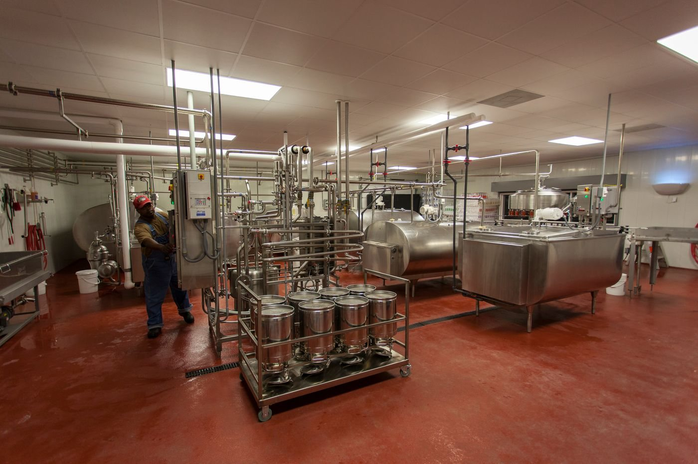
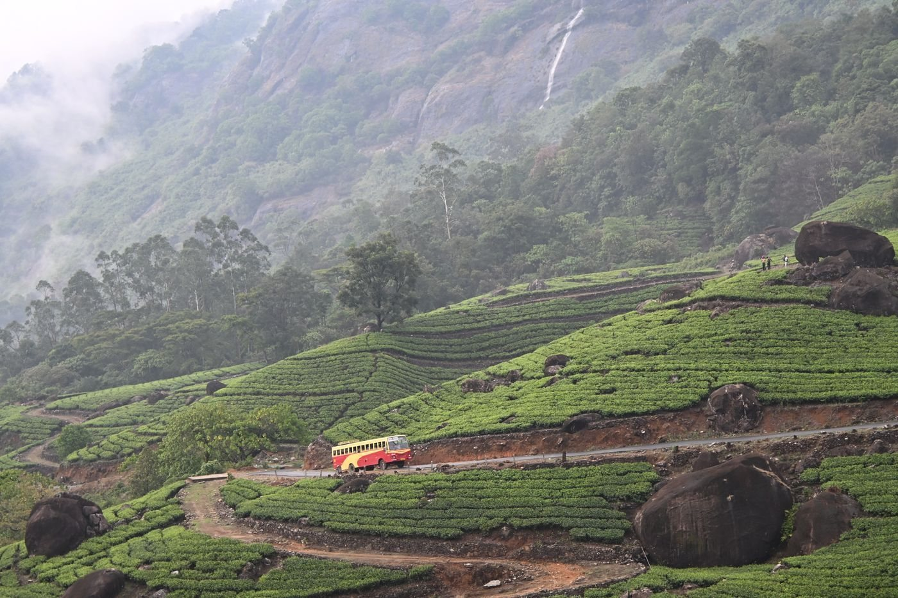

Biogas Development
Exploring responsible ways to turn agricultural and organic resources into renewable energy.
Project 04 / Dairy Development
Supporting a long-term vision for milk collection, processing, and distribution infrastructure.

Exploring the possibility
A connected dairy sector needs infrastructure that serves farmers at each stage. Milk collection, chilling, processing, and distribution are registered objectives. This page describes that development direction, rather than a commissioned facility or completed project.
The wider perspective
Exploring responsible ways to turn agricultural and organic resources into renewable energy.

Envisioning experiences that connect people with rural traditions, agricultural landscapes, and farm life.
There is more we can grow
People. Purpose. Possibility.Discover the possibilities of co-operation, innovation, and sustainable development.
Get in touch